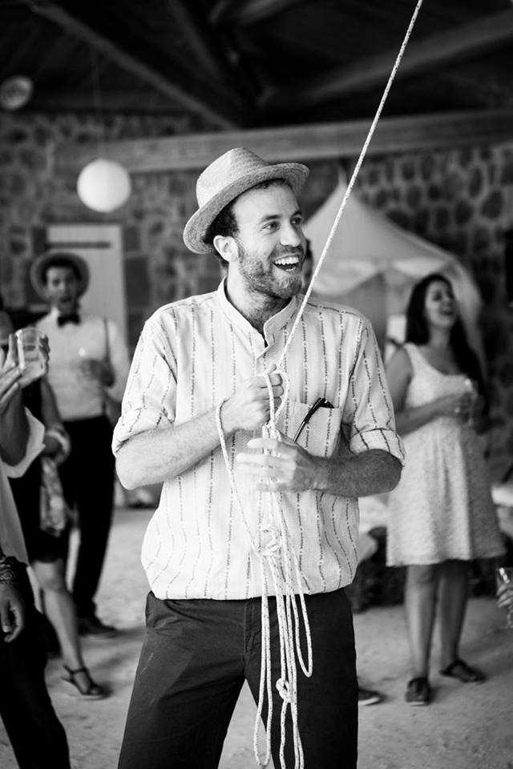

My research - Publications - CCS 2021 - GeoCoW 2020

About me
After obtaining my Master's degree in Mathematics at the University of Geneva, I started a Ph.D. at the University of Applied Sciences of Western Switzerland (HES-SO) in Sion (CH), under supervision of
Prof. Philippe Jacquod.
Our interest in the stability of power grids led us to investigate the phenomenon of synchronization of newtorked agents, and in particular the conditions for the existence of multiple synchronous states in such a system.
After graduating in May 2018, I stayed in Sion as a postdoc, with frequent interactions with
Prof. Florian Dörfler
at ETH Zurich.
Most of my work since then aims at a better understanding of the interplay between network structures and dynamics in systems of coupled dynamics agents.
In 2019, I had the oportunity to visit the
Center for Nonlinear Studies
(CNLS) at the Los Alamos National Laboratory (LANL).
There, my work with
Andrey Lokhov
and
Marc Vuffray
was directed towards the localization of disturbances in high-voltage power grids.
In 2020, I have been granted a Postdoc.Mobility grant from the Swiss National Science Foundation.
This funding will allow me to work for two years in the group of
Prof. Francesco Bullo
at the University of California in Santa Barbara.
A more formal CV, including a list of publications, can be found
here.
Recent occupations at a glance:
Since Oct. 2020: Postdoc at UCSB with Prof. F. Bullo.
Jun. 2018 - Jul. 2020: Postdoc between HES-SO and ETHZ with Profs. P. Jacquod and F. Dörfler.
Jul. - Aug. 2019: Visiting postdoc at LANL with A. Lokhov and M. Vuffray.
Dec. 2014 - May 2018: PhD at HES-SO with Prof. P. Jacquod.
My research
Working on the stability of electrical networks with a mathematical background naturally led me to investigate the relation between dynamical systems and complex networks.
On one hand, it is clear that the network structure underlying a dynamical system influences its dynamics.
Determining the impact of some network structures on the dynamics of a system is still an ongoing field of research.
On the other hand, if the underlying network is unkown, observations of the system can give enough information to recover some characteristics of the network.
Such an approach aims at learning the underlying system from measurements data.
Currently, my research interests cover the two faces of this coin.
In particular, with
P. Jacquod,
T. Coletta,
and
M. Tyloo,
we showed how the number and size of cycles in a network of dynamical agents influence the number of equilibria of the whole system.
More recently, with
P. Jacquod,
L. Pagnier,
and
M. Tyloo,
we proposed some methods to leverage the information included in measurements in order to recover the underlying network structure or the source of a disturbance in a dynamical system.
Back to top
Publications
A pdf version of my list of publication is available in
my CV.
All manuscripts are available on the
arXiv.
Preprints
-
R. Delabays, L. Pagnier, and M. Tyloo,
Locating high-frequency line disturbances with the frequency mismatch,
submitted (2022).
arXiv: 2202.08317
-
R. Delabays, S. Jafarpour, and F. Bullo,
Multistability and Paradoxes in Lossy Oscillator Networks,
submitted (2022).
arXiv: 2202.02439
-
R. Delabays and M. Tyloo,
Heavy-tailed distribution of the number of publications within scientific journals,
under preparation (2020).
arXiv: 2011.05703
Peer-reviewed
-
M. Tyloo, R. Delabays, and P. Jacquod,
Reconstructing Network Structures from Partial Measurements,
Chaos 31, 103117 (2021).
DOI: 10.1063/5.0058739
- arXiv: 2007.16136
-
R. Delabays and M. Tyloo,
Network Inference using Sinusoidal Probing,
IFAC-PapersOnLine 54, 696 (2021).
DOI: 10.1016/j.ifacol.2021.06.131
- arXiv: 2002.00490
-
R. Delabays, L. Pagnier, and M. Tyloo,
Locating Line and Node Disturbances in Networks of Diffusively Coupled Dynamical Agents,
New J. Phys. 23, 043037 (2021).
DOI: 10.1088/1367-2630/abf54b
- arXiv: 2003.08786
-
M. Tyloo and R. Delabays,
System Size Identification from Sinusoidal Probing in Diffusive Complex Networks,
J. Phys. Complex. 2, 025016 (2021).
DOI: 10.1088/2632-072X/abebd3
- arXiv: 2009.03824
-
A. Reggio, R. Delabays, and P. Jacquod,
Clusterization and Phase Diagram of the Bimodal Kuramoto Model with Bounded Confidence,
Chaos 30, 093134 (2020).
DOI: 10.1063/5.0020436
- arXiv: 1906.05698
-
R. Delabays,
Dynamical Equivalence between Kuramoto Models with First- and Higher-order Coupling,
Chaos 29, 113129 (2019).
DOI: 10.1063/1.5118941
- arXiv: 1907.03699
-
R. Delabays, M. Tyloo, and P. Jacquod,
Rate of Change of Frequency under Line Contingencies in High Voltage Electric Power Networks with Uncertainties,
Chaos 29, 103130 (2019).
DOI: 10.1063/1.5115002
- arXiv: 1906.05698
-
M. Tyloo, R. Delabays, and P. Jacquod,
Noise-Induced Desynchronization and Stochastic Escape from Equilibrium in Complex Networks,
Phys. Rev. E 99, 062213 (2019).
DOI: 10.1103/PhysRevE.99.062213
- arXiv: 1812.09497
-
D. Cimasoni and R. Delabays,
The Topological Hypothesis for Discrete Spin Models,
J. Stat. Mech. 2019 (2019).
DOI: 10.1088/1742-5468/ab0c14
- arXiv: 1811.10263
-
R. Delabays, P. Jacquod, and F. Dörfler,
The Kuramoto Model on Oriented and Signed Graphs,
SIAM J. Appl. Dyn. Syst. 18, 458 (2019).
DOI: 10.1137/18M1203055
- arXiv: 1807.11410
-
R. Delabays, M. Tyloo, and P. Jacquod,
The Size of the Sync Basin Revisited,
Chaos 27, 103109 (2017).
DOI: 10.1063/1.4986156
- arXiv: 1706.00344
-
T. Coletta, R. Delabays, and P. Jacquod,
Finite-size Scaling in the Kuramoto Model,
Phys. Rev. E 95, 103117 (2017).
DOI: 10.1103/PhysRevE.95.042207
- arXiv: 1612.07031
-
R. Delabays, T. Coletta, and P. Jacquod,
Multistability of Phase-Locking in Equal-Frequency Kuramoto Models on Planar Graphs,
J. Math. Phys. 58, 032703 (2017).
DOI: 10.1063/1.4978697
- arXiv: 1609.02359
-
T. Coletta, R. Delabays, I. Adagideli, and P. Jacquod,
Topologically Protected Loop Flows in High Voltage AC Power Grids,
New. J. Phys. 18, 103042 (2016).
DOI: 10.1088/1367-2630/18/10/103042
- arXiv: 1605.07925
-
R. Delabays, T. Coletta, and P. Jacquod,
Multistability of Phase-Locking and Topological Winding Numbers in Locally Coupled Kuramoto Models on Single-Loop Networks,
J. Math. Phys. 57, 032701 (2016).
DOI: 10.1063/1.4943296
- arXiv: 1512.04266
-
T. Coletta, R. Delabays, L. Pagnier, and P. Jacquod,
Large Electric Load Fluctuations in Energy-efficient Buildings and how to Suppress them with Demand Side Management,
IEEE PES ISGT Conf. Europe (2016).
DOI: 10.1109/ISGTEurope.2016.7856328
Softwares
Talks and posters
All conference material is under CC-BY license.
-
Oct. 25 - 29, 2021: Conference on Complex Systems 2021, Lyon, France.
Talk: Flow Network Problems on the n-torus with Asymmetric Couplings.
-
Jul. 5 - 10, 2021: Networks 2021, Online.
Talk: Reconstructing Network Structures from Partial Measurements.
-
Jan. 11 - 15, 2021: Grid Science Conference 2021, Online, hosted by Los Alamos National Lab (NM), USA.
Poster: Reconstructing Network Structures from Partial Measurements.
-
Nov. 4 - 8, 2019: Network Dynamics in the Social, Economic, and Financial Sciences, Torino, Italy.
Talk: Robustness of Election Results Against External Influence.
-
Sep. 23 - 26, 2019: International Workshop on Complex Systems and Networks, Berlin, Germany.
Talk: Rate of Change of Frequency under Line Contingencies.
-
Feb 3 - 8, 2019: Future Electric Power Systems, Champéry, Switzerland.
Poster: Bounding the Desynchronization Time in Electrical Grids under Fluctuating Sources.
-
Jan. 18, 2019: CCDC Seminar, Santa Barbara (CA), USA.
Talk: Bounding the Destabilization Time in Networks of Noisy Oscillators.
-
Jan. 7 - 11, 2019: Grid Science Conference, Santa Fe (NM), USA.
Poster: Bounding the Desynchronization Time in Electrical Grids under Fluctuating Sources.
-
Sep. 3 - 7, 2018: Dynamics Days Europe, Loughborough, UK.
Talk: Multistability in Electric Power Grids on Meshed, Complex Networks.
-
Jan. 29 - 31, 2018: WE-Hereaus Seminar, Bad Honnef, Germany.
Poster: The Size of the Sync Basin Revisited.
-
Sep. 3 - 8, 2017: International School on Energy Systems, Kloster Seeon, Germany.
Poster: Topologically Protected Loop Flows in High Voltage AC Power Grids.
-
Feb. 5 - 9, 2017: Future Electric Power Systems, Champéry, Switzerland.
Talk: Loop Flows and the Number of Power Flow Solutions in Meshed Electric Power Grids.
-
Jan. 8 - 13, 2017: Grid Science Conference, Santa Fe (NM), USA.
Poster: Multistability of Phase-Locking and Vortices in Locally Coupled Kuramoto Models.
-
Jun. 6 - 10, 2016 Dynamics Days Europe, Corfu, Greece.
Talk: Multistability of Phase-Locking and Topological Winding Numbers in Locally Coupled Kuramoto Models.
Ph.D. Thesis
Back to top
CCS 2021 - Satellite Symposium

In October 2021, I co-organized the Satellite Symposium
Data-based Diagnosis of Networked Dynamical Systems
at the
Conference on Complex Systems
in Lyon, with L. Pagnier and M. Tyloo.
More information can be found
here.
We had a great panel of speakers, both on-site and online.
It was really nice to attend live talks again.
Back to top

GeoCoW 2020
From February 2nd to 5th, 2020, I co-organized the workshop Geometry of Complex Webs (GeoCoW) with Matthieux Jacquemet (HES-SO and UniFR) and Christian Mazza (UniFR).
It took place in the nice alpine village of Les Diablerets, Switzerland.
We gathered speakers and attendees from broad backgrounds, ranging from pure mathematicians to engineers, including physicists, life scientists, and computer scientists.
The aim of this workshop was to encourage people from different field to interact around the interdisciplinary topic of complex networks and see opportunities for new and rich collaborations.
All details about the event can be found here.
Back to top